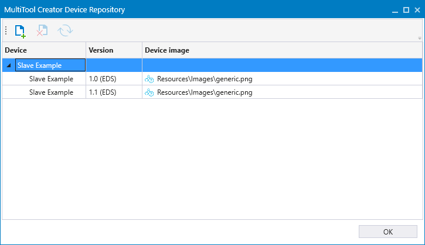

Device repository includes user created predefined devices. These devices contain the EDS file to create the device. Also, the picture for the device can be changed to better match the actual device.
If there are multiple versions of different devices, the version is shown under the parent device. The menu only shows the device, and after the device is added, the version can be changed. By default, the newest version of the device is added.
A device can be added and removed from the repository. An EDS file is needed to create new device. Device repository devices are stored locally and the path to the device repository can be set in the Settings view.

Epec Oy reserves all rights for improvements without prior notice.
Source file topic200032.htm
Last updated 25-Jun-2025